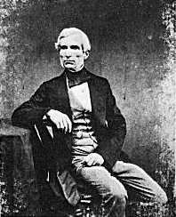

Export date: 2016-09-03
GRAMPS homepage: Gramps
GRAMPS version: 5.0.0-alpha1
Number of families: 479
Number of persons: 1133
Number of media objects: 7
Number of sources: 4
Number of repositories: 3
Number of places: 889
Search form:
Test link person: Garner von Zieliński, Lewis Anderson Sr
Test link family: Family of Warner, Allen Carl and Garner, Rita Marie
Test link source: World of the Wierd
Test link media: 1897_expeditionsmannschaft_rio_a
Test link place: Warren-Farmington Hills-Troy, MI
Test internet link: blog.codinghorror.com
Test relative path link: relative file path to "archive.zip"
Test relative path link: relative file path to "archive.tgz"
Thumbnail for "1897_expeditionsmannschaft_rio_a":
Image "AntoineClaudet":

Thumbnail for "1897_expeditionsmannschaft_rio_a" with link:
Image "AntoineClaudet" with link:
Wrong media ID:
__MEDIA_wrong id__